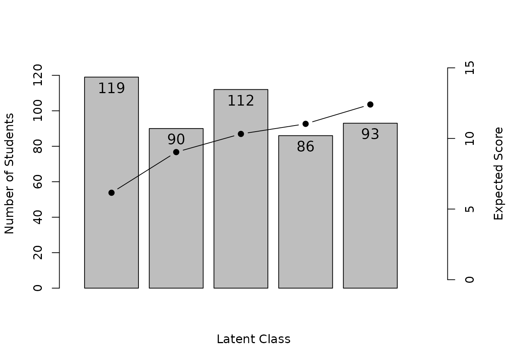
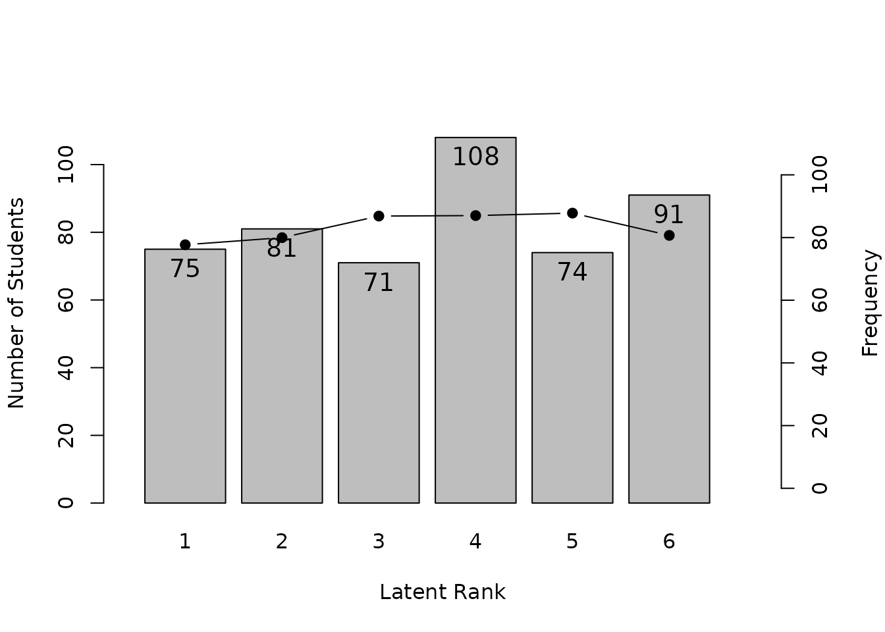

Note: Some computationally intensive examples below are shown with
eval=FALSEto keep CRAN build times short. For full rendered output, see the pkgdown site.
Latent Class Analysis (LCA)
LCA classifies examinees into unordered latent classes. Specify the dataset and the number of classes.
LCA(J15S500, ncls = 5)
#>
#> Item Reference Profile
#> IRP1 IRP2 IRP3 IRP4 IRP5
#> Item01 0.5899 0.6616 0.7723 0.8528 0.884
#> Item02 0.5174 0.7102 0.8282 0.8863 0.871
#> Item03 0.5913 0.6112 0.8905 0.7196 0.839
#> Item04 0.3894 0.8671 0.8214 0.8657 1.000
#> Item05 0.6729 0.6759 1.0000 0.7718 0.920
#> Item06 0.6261 0.8857 0.9478 1.0000 0.903
#> Item07 0.3530 0.7209 0.7978 0.8818 0.891
#> Item08 0.3087 0.5911 0.5724 0.9172 0.609
#> Item09 0.2856 0.5414 0.2028 0.0993 0.692
#> Item10 0.5334 0.4995 0.8109 0.6898 0.800
#> Item11 0.0977 0.0203 0.0437 0.6450 0.678
#> Item12 0.0324 0.2904 0.1232 0.2821 0.684
#> Item13 0.2753 0.5690 0.9059 0.6655 0.811
#> Item14 0.4745 0.7017 0.7876 0.9101 1.000
#> Item15 0.4076 0.6879 0.8160 0.8471 0.824
#>
#> Test Profile
#> Class 1 Class 2 Class 3 Class 4 Class 5
#> Test Reference Profile 6.155 9.034 10.321 11.034 12.405
#> Latent Class Distribution 119.000 90.000 112.000 86.000 93.000
#> Class Membership Distribution 112.595 99.087 98.338 93.199 96.781
#>
#> Item Fit Indices
#> model_log_like bench_log_like null_log_like model_Chi_sq null_Chi_sq
#> Item01 -265.973 -240.190 -283.343 51.567 86.307
#> Item02 -252.897 -235.436 -278.949 34.921 87.025
#> Item03 -274.312 -260.906 -293.598 26.811 65.383
#> Item04 -197.018 -192.072 -265.962 9.892 147.780
#> Item05 -210.739 -206.537 -247.403 8.404 81.732
#> Item06 -160.728 -153.940 -198.817 13.577 89.755
#> Item07 -248.567 -228.379 -298.345 40.377 139.933
#> Item08 -295.127 -293.225 -338.789 3.804 91.127
#> Item09 -275.194 -300.492 -327.842 -50.596 54.700
#> Item10 -300.308 -288.198 -319.850 24.219 63.303
#> Item11 -184.992 -224.085 -299.265 -78.187 150.360
#> Item12 -228.335 -214.797 -293.598 27.076 157.603
#> Item13 -270.952 -262.031 -328.396 17.843 132.730
#> Item14 -217.326 -204.953 -273.212 24.746 136.519
#> Item15 -269.453 -254.764 -302.847 29.378 96.166
#> model_df null_df NFI RFI IFI TLI CFI RMSEA AIC CAIC
#> Item01 9 13 0.403 0.137 0.449 0.161 0.419 0.097 33.567 -13.365
#> Item02 9 13 0.599 0.420 0.668 0.494 0.650 0.076 16.921 -30.011
#> Item03 9 13 0.590 0.408 0.684 0.509 0.660 0.063 8.811 -38.120
#> Item04 9 13 0.933 0.903 0.994 0.990 0.993 0.014 -8.108 -55.039
#> Item05 9 13 0.897 0.851 1.000 1.000 1.000 0.000 -9.596 -56.527
#> Item06 9 13 0.849 0.782 0.943 0.914 0.940 0.032 -4.423 -51.355
#> Item07 9 13 0.711 0.583 0.760 0.643 0.753 0.084 22.377 -24.554
#> Item08 9 13 0.958 0.940 1.000 1.000 1.000 0.000 -14.196 -61.127
#> Item09 9 13 1.000 1.000 1.000 1.000 1.000 0.000 -68.596 -115.528
#> Item10 9 13 0.617 0.447 0.720 0.563 0.697 0.058 6.219 -40.712
#> Item11 9 13 1.000 1.000 1.000 1.000 1.000 0.000 -96.187 -143.118
#> Item12 9 13 0.828 0.752 0.878 0.819 0.875 0.063 9.076 -37.856
#> Item13 9 13 0.866 0.806 0.929 0.893 0.926 0.044 -0.157 -47.089
#> Item14 9 13 0.819 0.738 0.877 0.816 0.873 0.059 6.746 -40.186
#> Item15 9 13 0.695 0.559 0.766 0.646 0.755 0.067 11.378 -35.553
#> BIC
#> Item01 -4.365
#> Item02 -21.011
#> Item03 -29.120
#> Item04 -46.039
#> Item05 -47.527
#> Item06 -42.355
#> Item07 -15.554
#> Item08 -52.127
#> Item09 -106.528
#> Item10 -31.712
#> Item11 -134.118
#> Item12 -28.856
#> Item13 -38.089
#> Item14 -31.186
#> Item15 -26.553
#>
#> Model Fit Indices
#> Number of Latent class: 5
#> Number of EM cycle: 337
#> value
#> model_log_like -3651.921
#> bench_log_like -3560.005
#> null_log_like -4350.217
#> model_Chi_sq 183.832
#> null_Chi_sq 1580.424
#> model_df 135.000
#> null_df 195.000
#> NFI 0.884
#> RFI 0.832
#> IFI 0.966
#> TLI 0.949
#> CFI 0.965
#> RMSEA 0.027
#> AIC -86.168
#> CAIC -790.140
#> BIC -655.140
#>
#> Variational Fit
#> value
#> ELBO -4118.164
#> log_lik_marginal -4118.164
#> entropy_class 338.476
#> ICL 9064.738The Class Membership Matrix indicates which latent class each examinee belongs to:
result.LCA <- LCA(J15S500, ncls = 5)
head(result.LCA$Students)
#> Membership 1 Membership 2 Membership 3 Membership 4 Membership 5
#> Student001 0.7281646596 0.012201215 0.226647654 3.298647e-02 3.051500e-12
#> Student002 0.0220667934 0.087019999 0.830774343 6.013876e-02 1.075088e-07
#> Student003 0.0170563995 0.054112134 0.879768216 2.099456e-02 2.806869e-02
#> Student004 0.0010508169 0.223167062 0.203772041 3.286839e-01 2.433262e-01
#> Student005 0.9407941768 0.053323634 0.004873676 1.806795e-08 1.008496e-03
#> Student006 0.0002372348 0.002526937 0.029811035 8.550547e-01 1.123701e-01
#> Estimate
#> Student001 1
#> Student002 3
#> Student003 3
#> Student004 4
#> Student005 1
#> Student006 4LCA Plot Types
- IRP: Item Reference Profile
- CMP: Class Membership Profile
- TRP: Test Reference Profile
- LCD: Latent Class Distribution
plot(result.LCA, type = "IRP", items = 1:6, nc = 2, nr = 3)
plot(result.LCA, type = "CMP", students = 1:9, nc = 3, nr = 3)
plot(result.LCA, type = "TRP")
plot(result.LCA, type = "LCD")Latent Rank Analysis (LRA)
LRA is similar to LCA but assumes an ordering among the latent classes (ranks). Specify the dataset and the number of ranks.
LRA(J15S500, nrank = 6)
#> estimating method is isotonic
#> Item Reference Profile
#> IRP1 IRP2 IRP3 IRP4 IRP5 IRP6
#> Item01 0.4582 0.7484 0.7484 0.7484 0.839 0.914
#> Item02 0.5601 0.5601 0.8048 0.8048 0.883 0.883
#> Item03 0.5996 0.5996 0.7590 0.7590 0.759 0.866
#> Item04 0.4668 0.4668 0.8949 0.8949 0.895 0.995
#> Item05 0.5593 0.8284 0.8284 0.8284 0.828 0.936
#> Item06 0.6196 0.7691 0.9416 0.9416 0.942 0.942
#> Item07 0.4112 0.4112 0.7402 0.8959 0.896 0.896
#> Item08 0.3485 0.3485 0.6006 0.7315 0.732 0.732
#> Item09 0.3149 0.3149 0.3149 0.3149 0.315 0.619
#> Item10 0.4438 0.6344 0.6940 0.6940 0.722 0.765
#> Item11 0.0816 0.0816 0.0816 0.0816 0.688 0.688
#> Item12 0.0653 0.0653 0.2193 0.2193 0.219 0.859
#> Item13 0.2228 0.4902 0.7527 0.7527 0.753 0.788
#> Item14 0.2894 0.7760 0.7760 0.7760 0.933 1.000
#> Item15 0.3830 0.5188 0.8164 0.8164 0.816 0.845
#>
#> Item Reference Profile Indices
#> Alpha A Beta B Gamma C
#> Item01 1 0.290 1 0.458 0 0
#> Item02 2 0.245 1 0.560 0 0
#> Item03 2 0.159 1 0.600 0 0
#> Item04 2 0.428 1 0.467 0 0
#> Item05 1 0.269 1 0.559 0 0
#> Item06 2 0.173 1 0.620 0 0
#> Item07 2 0.329 1 0.411 0 0
#> Item08 2 0.252 3 0.601 0 0
#> Item09 5 0.304 6 0.619 0 0
#> Item10 1 0.191 1 0.444 0 0
#> Item11 4 0.607 5 0.688 0 0
#> Item12 5 0.640 3 0.219 0 0
#> Item13 1 0.267 2 0.490 0 0
#> Item14 1 0.487 1 0.289 0 0
#> Item15 2 0.298 2 0.519 0 0
#>
#> Test Profile
#> Rank 1 Rank 2 Rank 3 Rank 4 Rank 5 Rank 6
#> Test Reference Profile 5.824 7.613 9.973 10.259 11.219 12.727
#> Latent Rank Distribution 75.000 81.000 71.000 108.000 74.000 91.000
#> Rank Membership Distribution 77.701 79.962 86.850 87.008 87.794 80.684
#>
#> Item Fit Indices
#> model_log_like bench_log_like null_log_like model_Chi_sq null_Chi_sq
#> Item01 -259.076 -240.190 -283.343 37.774 86.307
#> Item02 -254.770 -235.436 -278.949 38.667 87.025
#> Item03 -282.423 -260.906 -293.598 43.033 65.383
#> Item04 -199.587 -192.072 -265.962 15.031 147.780
#> Item05 -229.024 -206.537 -247.403 44.974 81.732
#> Item06 -170.971 -153.940 -198.817 34.063 89.755
#> Item07 -241.896 -228.379 -298.345 27.035 139.933
#> Item08 -308.978 -293.225 -338.789 31.505 91.127
#> Item09 -314.833 -300.492 -327.842 28.681 54.700
#> Item10 -308.795 -288.198 -319.850 41.194 63.303
#> Item11 -198.254 -224.085 -299.265 -51.663 150.360
#> Item12 -208.499 -214.797 -293.598 -12.595 157.603
#> Item13 -284.708 -262.031 -328.396 45.355 132.730
#> Item14 -203.449 -204.953 -273.212 -3.008 136.519
#> Item15 -266.695 -254.764 -302.847 23.862 96.166
#> model_df null_df NFI RFI IFI TLI CFI RMSEA AIC CAIC
#> Item01 10 13 0.562 0.431 0.636 0.507 0.621 0.075 17.774 -34.373
#> Item02 11 13 0.556 0.475 0.636 0.558 0.626 0.071 16.667 -40.694
#> Item03 11 13 0.342 0.222 0.411 0.277 0.388 0.076 21.033 -36.327
#> Item04 11 13 0.898 0.880 0.971 0.965 0.970 0.027 -6.969 -64.330
#> Item05 11 13 0.450 0.350 0.520 0.416 0.506 0.079 22.974 -34.387
#> Item06 11 13 0.620 0.551 0.707 0.645 0.700 0.065 12.063 -45.297
#> Item07 11 13 0.807 0.772 0.876 0.851 0.874 0.054 5.035 -52.326
#> Item08 11 13 0.654 0.591 0.744 0.690 0.738 0.061 9.505 -47.856
#> Item09 12 13 0.476 0.432 0.609 0.567 0.600 0.053 4.681 -57.894
#> Item10 9 13 0.349 0.060 0.407 0.076 0.360 0.085 23.194 -23.738
#> Item11 12 13 1.000 1.000 1.000 1.000 1.000 0.000 -75.663 -138.238
#> Item12 11 13 1.000 1.000 1.000 1.000 1.000 0.000 -34.595 -91.956
#> Item13 10 13 0.658 0.556 0.712 0.616 0.705 0.084 25.355 -26.791
#> Item14 10 13 1.000 1.000 1.000 1.000 1.000 0.000 -23.008 -75.154
#> Item15 10 13 0.752 0.677 0.839 0.783 0.833 0.053 3.862 -48.284
#> BIC
#> Item01 -24.373
#> Item02 -29.694
#> Item03 -25.327
#> Item04 -53.330
#> Item05 -23.387
#> Item06 -34.297
#> Item07 -41.326
#> Item08 -36.856
#> Item09 -45.894
#> Item10 -14.738
#> Item11 -126.238
#> Item12 -80.956
#> Item13 -16.791
#> Item14 -65.154
#> Item15 -38.284
#>
#> Model Fit Indices
#> Number of Latent rank: 6
#> Number of EM cycle: 65
#> value
#> model_log_like -3731.959
#> bench_log_like -3560.005
#> null_log_like -4350.217
#> model_Chi_sq 343.908
#> null_Chi_sq 1580.424
#> model_df 161.000
#> null_df 195.000
#> NFI 0.782
#> RFI 0.736
#> IFI 0.871
#> TLI 0.840
#> CFI 0.868
#> RMSEA 0.048
#> AIC 21.908
#> CAIC -817.644
#> BIC -656.644
#>
#> Variational Fit
#> value
#> ELBO -4131.841
#> log_lik_marginal -4131.841
#> entropy_class 495.998
#> ICL 9145.928Rank membership probabilities and rank-up/rank-down odds are calculated:
result.LRA <- LRA(J15S500, nrank = 6)
head(result.LRA$Students)
#> Membership 1 Membership 2 Membership 3 Membership 4 Membership 5
#> Student001 0.373362828 0.428218832 0.11222243 0.03023517 0.055960736
#> Student002 0.020038540 0.080823095 0.57927688 0.28286515 0.036996142
#> Student003 0.006211982 0.213060043 0.54320920 0.14635238 0.076437420
#> Student004 0.001004123 0.009115719 0.19879539 0.29307173 0.133726701
#> Student005 0.252721804 0.727486696 0.01394724 0.00375769 0.001962579
#> Student006 0.000130071 0.002051624 0.04590205 0.06767055 0.766752034
#> Membership 6 Estimate Rank-Up Odds Rank-Down Odds
#> Student001 6.586004e-09 2 0.26206795 0.87189726
#> Student002 1.929370e-07 3 0.48830733 0.13952412
#> Student003 1.472897e-02 3 0.26942176 0.39222466
#> Student004 3.642863e-01 6 NA 0.36709228
#> Student005 1.239901e-04 2 0.01917182 0.34739028
#> Student006 1.174937e-01 5 0.15323555 0.08825611
plot(result.LRA, type = "IRP", items = 1:6, nc = 2, nr = 3)
plot(result.LRA, type = "RMP", students = 1:9, nc = 3, nr = 3)
plot(result.LRA, type = "TRP")
plot(result.LRA, type = "LRD")
Classifying New Respondents with predict()
Once a model is fitted, predict() assigns new
respondents to its classes or ranks. The estimated parameters are held
fixed and one E-step is run on the new responses, so the new respondents
do not change the model. This is useful when the model is built on one
group and applied to another, for example a later cohort that took the
same test.
Here the model is fitted to the first 400 examinees and then used to classify the remaining 100.
X <- J15S500$U
X[J15S500$Z == 0] <- NA
fit <- LRA(dataFormat(X[1:400, ]), nrank = 6)
pred <- predict(fit, X[401:500, ])
pred
#> Prediction from a LRA fit: 100 respondents, 6 ranks
#>
#> Latent rank distribution of the estimates:
#> Rank1 Rank2 Rank3 Rank4 Rank5 Rank6
#> 13 20 17 19 16 15
head(round(pred$Membership, 3))
#> Rank1 Rank2 Rank3 Rank4 Rank5 Rank6
#> Student1 0.000 0.003 0.048 0.057 0.163 0.729
#> Student2 0.323 0.410 0.138 0.128 0.001 0.000
#> Student3 0.006 0.150 0.312 0.216 0.127 0.189
#> Student4 0.000 0.007 0.098 0.573 0.275 0.047
#> Student5 0.071 0.090 0.627 0.155 0.058 0.000
#> Student6 0.012 0.116 0.417 0.288 0.159 0.008
head(pred$Estimate)
#> Student1 Student2 Student3 Student4 Student5 Student6
#> 6 2 3 4 3 3newdata can be a matrix or data frame with the items in
columns, or an object made by dataFormat(). Items are
matched by name, so the columns may come in any order and extra columns
are ignored; a missing item is an error. Missing responses
(NA, or the codes given in na) are simply left
out of the likelihood, so a respondent who answered only some items
still gets a membership. Polytomous responses must use the coding of the
fitted data; a category that the fitted data never used for an item
cannot be scored and is treated as missing, with a warning.
pred$log_lik holds each respondent’s log-likelihood
under the model. Summed over held-out respondents, it gives a predictive
criterion for comparing models fitted to the same training data:
fit4 <- LRA(dataFormat(X[1:400, ]), nrank = 4)
c(
nrank4 = sum(predict(fit4, X[401:500, ])$log_lik),
nrank6 = sum(pred$log_lik)
)
#> nrank4 nrank6
#> -831.3531 -832.0329On the data a model was fitted to, predict() reproduces
the memberships stored in the fit. It works the same way for
LCA() and for Biclustering() / Ranklustering,
with binary, nominal, ordinal and rated data; for biclustering the field
memberships of the items are held fixed as well.
LRA for Ordinal Data
LRA can also handle ordinal scale data. The mic option
enforces monotonic increasing constraints.
result.LRAord <- LRA(J15S3810, nrank = 3, mic = TRUE)Score-rank relationship visualizations:
Item-rank relationship plots:
- ICBR: Item Category Boundary Reference – cumulative probability curves for each category threshold
- ICRP: Item Category Response Profile – probability of each response category across ranks
plot(result.LRAord, type = "ICBR", items = 1:4, nc = 2, nr = 2)
plot(result.LRAord, type = "ICRP", items = 1:4, nc = 2, nr = 2)Rank membership profiles for individual examinees:
plot(result.LRAord, type = "RMP", students = 1:9, nc = 3, nr = 3)